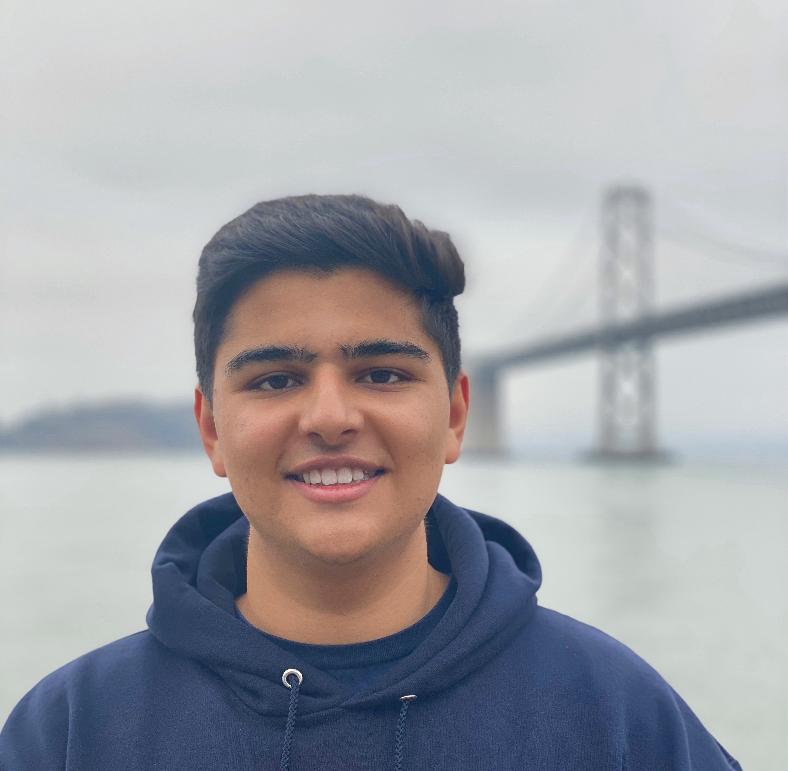

|
Zeeshan Patel
I am an undergraduate student at UC Berkeley studying Computer Science and Statistics. My main research focus is in generative computer vision and AI generalization. Currently, I am an undergraduate researcher at Berkeley Artificial Intelligence Research (BAIR), and I am advised by PhD student Yossi Gandelsman and Professor Alexei Efros. I am also interning as a Deep Learning Algorithms Engineer NVIDIA NeMo.
I have also interned at Apple AI/ML as a ML Engineer on the Information Intelligence team where I worked on foundation models. Previosuly, I have also interned at Verkada on the Special Projects team as a ML engineer.
Email /
Github
|

|
|
Research
I'm broadly interested in machine learning, computer vision, and NLP. Specifically, I'm interested in the mechanisitic interpretability of deep learning models and how to create AI systems that can generalize under distribution shifts. I'm also curious about the intersection of vision and language and how visual systems can leverage language to interact with humans.
|
|
{kind=link}